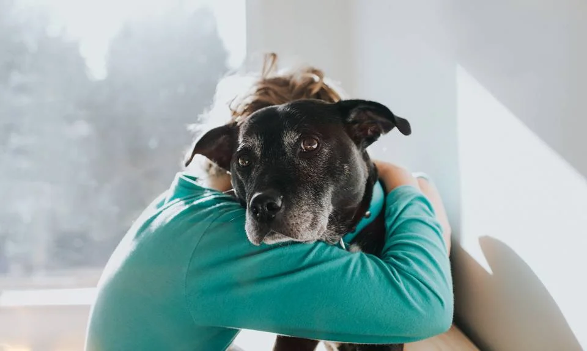

Nossa Missão
A ONG Amigo Fiel nasceu em 2025 com o objetivo de resgatar, reabilitar e encontrar lares amorosos para animais abandonados e em situação de risco na nossa comunidade. Acreditamos que todo animal merece uma segunda chance e uma vida digna.
Nossos Pilares:
- Resgate e Cuidados: Oferecemos abrigo, alimentação, vacinação e tratamento veterinário para todos os animais resgatados.
- Conscientização: Promovemos campanhas de conscientização sobre a importância da castração, guarda responsável e os malefícios do abandono.
- Adoção Responsável: Conduzimos um processo rigoroso de adoção para garantir que os pets sejam destinados a famílias que possam oferecer amor e segurança a longo prazo.
Nosso Trabalho em Números
| Ano | Resgates | Adoções |
|---|---|---|
| 2023 | 150+ | 120+ |
| Total | 500+ | 400+ |